#9051 A Silent Voice
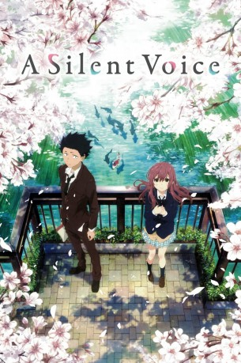 
 IMDB-Wertung: 8.2 / 10
IMDB-Wertung: 8.2 / 10  Metascore: 0
Metascore: 0 
Shouya Ishida ist ein sehr aktives Kind. Mit seinen Freunden veranstaltet er regelmäßig Mutproben, um sich zu beweisen. Das Schulleben findet er langweilig und kann nicht verstehen, warum seine Freunde immer öfter von ihm verlangen, erwachsen zu werden. Als eines Tages das hörgeschädigte Mädchen Shouko Nishimiya in seine Klasse kommt, macht es ihm erst Spaß, sie zu ärgern; doch da ist scheinbar mehr …
Jahr: 2016
Dauer: 129 Minuten
FSK: 6
Land: Japan Studio: Ponî KyanionTonspuren: DTS-HD - ,
Untertitel: Deutsch,
Auflösung: 1080p (1920x1080) Größe: 10065 MB
Genre: Drama, Animation/Trick, Familie, Liebe
Regisseur: Naoko Yamada
Drehbuch: Yoshitoki Oima
Soundtrack: Kensuke Ushio
Darsteller:
- 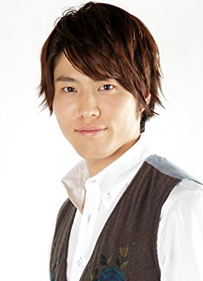 Miyu Irino als Shôya Ishida
- Saori Hayami als Shoko Nishimiya
- 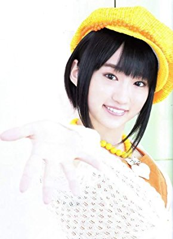 Aoi Yûki als Yuzuru Nishimiya
- Yui Ishikawa als Miyoko Sahara
- Akiko Hiramatsu als Yaeko Nishimiya
- 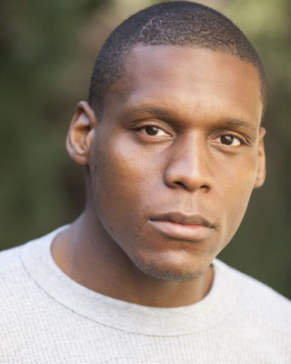 Chris Jai Alex als Pedro
- Brian Beckerle als Hirose - Young
- Christine Marie Cabanos als Additional Voices
- Amber Lee Connors als Miki Kawai
- Sara Cravens als Miyako Ishida
- 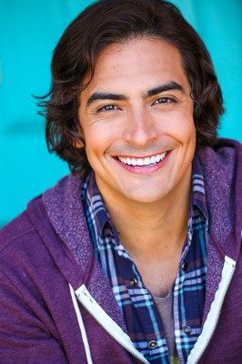 Robbie Daymond als Shôya Ishida
- 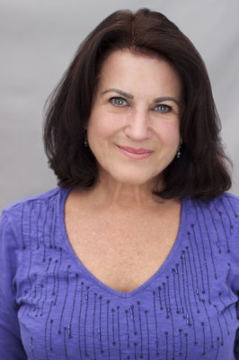 Barbara Goodson als Ito Nishimiya
- Gia Grace als Naoka Ueno - Young
- Catie Harvey als Miyoko Sahara - Young
- 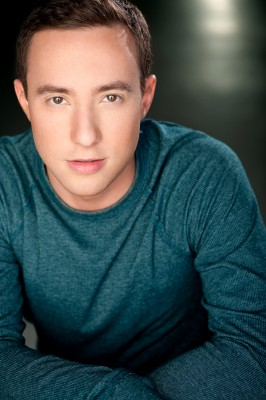 Max Mittelman als Satoshi Mashiba
- 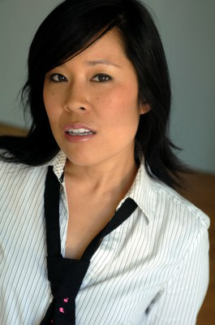 Stephanie Sheh als Additional Voices
- 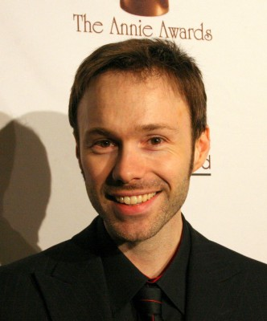 Michael Sinterniklaas als Kazuki Shimada
- 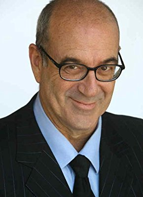 Michael Sorich als Additional Voices
- Kristen Sullivan als Yuzuru Nishimiya
- Amanda Winn Lee als Additional Voices
 Kôichi Yamadera als
Kôichi Yamadera als - Kenshô Ono als Tomohiro Nagatsuka
- Yûki Kaneko als Naoka Ueno
- Megumi Han als Miki Kawai
- Toshiyuki Toyonaga als Satoshi Mashiba
- Mayu Matsuoka als Young Shoya Ishida
- Sachiko Kojima als Young Kazuki Shimada
- Hana Takeda als Young Keisuke Hirose
- Fuminori Komatsu als Takeuchi-sensei
- Ikuko Tani als Ito Nishimiya
- Erena Kamata als Maria Ishida
- Ayano Hamaguchi als Shoya's sister
- Ryunosuke Watanuki als Pedro
- Ryô Nishitani als Kazuki Shimada
- Takuya Masumoto als Keisuke Hirose
- Satsuki Yukino als Miyako Ishida
- Kira Buckland als Naoka Ueno
- Annabelle Corigliano als Miki Kawai (young)
- AnnaBelle Deaner als Maria Ishida
- 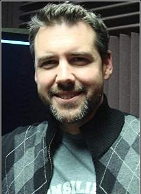 Marc Diraison als Mr. Takeuchi
- Graham Halstead als Tomohiro Nagatsuka
- Lexi Marman als Shôko Nishimiya
- Shôko Nakagawa als
- Spencer Rosen als Kazuki Shimada - Young
- Michael Schneider als Additional Voices
- Melissa Schoenberg als Miyoko Sahara
- Lipica Shah als Yaeko Nishimiya
- Ryan Shanahan als Shôya Ishida - in year 6 at school
- Daiki Yamashita als
Datei: X:\Kinder Anime\Div Anime\Silent Voice, A (2016, FSK6, 1920x1080).mkv seit 19.07.2018
Festplatte: Kinder-Filme+Trick
 Es gibt insgesamt 40 Filme in der Gruppe 'Kinder Anime\Div Anime'
Es gibt insgesamt 40 Filme in der Gruppe 'Kinder Anime\Div Anime'